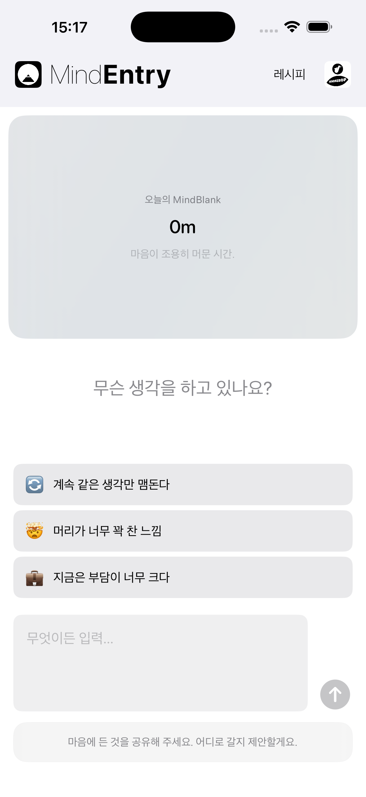
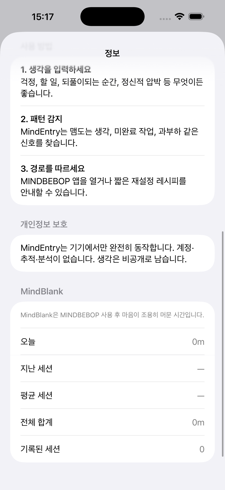

마음이 조용히 머물렀던 시간.
MindBlank는 점수가 아닙니다.
MINDBEBOP 상호작용을 마친 후, 해결되지 않은 생각의 반복으로부터 마음이 얼마나 오래 자유로웠는지를 조용히 보여주는 신호입니다.
앱을 얼마나 오래 사용했는지를 측정하는 것이 아니라, 다음 정신적 리셋이 필요하지 않았던 시간이 얼마나 되었는지를 MINDBEBOP가 보여줍니다.
MINDBEBOP은 Mental Background 레이어를 구조화하는 모듈형 아키텍처를 통해, 해결되지 않은 생각에 조용히 소모되고 있던 주의력을 되찾도록 도와줍니다.
대부분의 앱은 사용량을 측정합니다. MindBlank는 필요하지 않았던 시간을 보여줍니다.
그 조용한 간격이 MindBlank입니다.
마음이 조용했던 시간을 자연스럽게 비춰줍니다.
MindBlank에는 설문도, 평가도, 자기 판단도 필요하지 않습니다.
MINDBEBOP 상호작용을 마친 뒤 한동안 또 다른 정신적 리셋이 필요하지 않았다면, MindBlank는 그 시간을 조용히 보여줍니다.
질문도 없습니다. 판단도 없습니다. 해석도 없습니다.
MindFlipOut에서 Flip을 완료합니다.
다음 MINDBEBOP 도구가 필요해질 때까지 2시간이 지났습니다.
MindBlank 표시: 2시간의 마음의 고요
고요함이 항상 해결을 의미하는 것은 아닙니다. 생각은 준비가 되었을 때 나중에 다시 돌아올 수 있습니다.
MindBlank는 단지 조용한 시간을 보여줍니다. 즉, 해결되지 않은 루프가 당신의 주의를 요구하지 않았던 시간입니다.
MindBlank는 MINDBEBOP Mental Background OS의 진입점인 MindEntry에 내장되어 있습니다.
앞으로는 MindEntryBiz에서 조직 전체를 위한 집계 지표로 표시될 수도 있습니다.


MindBlank는 MindEntry 안에서 확인할 수 있습니다.
MindBlank는 성취를 위한 것이 아닙니다.
다음 정신적 리셋이 필요해질 때까지 마음이 얼마나 오래 조용했는지를 알아차리기 위한 것입니다.
Copyright © 2026 MINDBEBOP — All rights reserved.